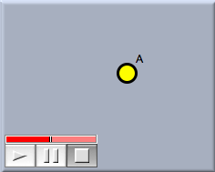
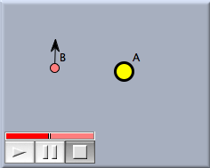
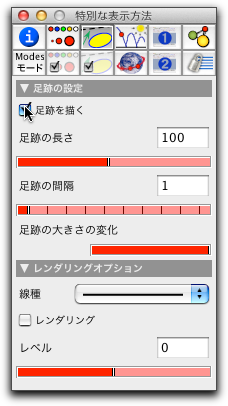
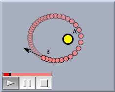

ケプラーの楕円
この小さなチュートリアルで、CindyLab による小さな物理シミュレーションを準備します。太陽を軌道に乗って回っている惑星をモデル化します。このチュートリアルで、物理シミュレーションの準備と始め方について学んでください。
シンデレラを起動したら、 ツールバーの
 ボタンをクリックして「恒星を加える」モードにします。それから、任意の位置に恒星(太陽)を加えてください。 恒星が加えられるとアニメーションコントローラが現れます。CindyLab の物理的要素が存在するときは、常にアニメーションコントローラがあります。表示画面は図１のように見えるでしょう。
ボタンをクリックして「恒星を加える」モードにします。それから、任意の位置に恒星(太陽)を加えてください。 恒星が加えられるとアニメーションコントローラが現れます。CindyLab の物理的要素が存在するときは、常にアニメーションコントローラがあります。表示画面は図１のように見えるでしょう。 |
| 図1 : 恒星が生まれた |
さて、恒星の軌道に乗って回って欲しい惑星を加えます。惑星の初速度は恒星に対して垂直でなければなりません。さもないと直接恒星に引きつけられて終わってしまいます 「速度つき質点を加える」モード
 をクリックし、恒星に近いところでマウスボタンを押し、そのまま少しドラッグして離してください。 マウスボタンを押すと質点が作られます。ドラッグすると速度ベクトルが作られ、ボタンを離すとでき上がります。図２のようになったでしょうか。うまくいかなかったときは、動かすモードにして、点の位置を変えたり、矢線を調節したりすることができます。
をクリックし、恒星に近いところでマウスボタンを押し、そのまま少しドラッグして離してください。 マウスボタンを押すと質点が作られます。ドラッグすると速度ベクトルが作られ、ボタンを離すとでき上がります。図２のようになったでしょうか。うまくいかなかったときは、動かすモードにして、点の位置を変えたり、矢線を調節したりすることができます。 |
| 図２ : 恒星と惑星 |
さて、 プレイボタンを押してシミュレーションを始めることができます。 きっとアニメーションは速く動きすぎるでしょう。アニメーションコントローラのスライダーを動かすと速さを変えることができます。惑星は楕円軌道を描くでしょう。 (これがケプラーの第３法則です)。
楕円をもうすこし見やすくしましょう。そのためには、惑星である点 B が動いた足跡を表示します。 インスペクタを開き、「特別な表示の設定」ボタン
 をクリックします。点 B を選択すると、インスペクタは図３のようになるでしょう。
をクリックします。点 B を選択すると、インスペクタは図３のようになるでしょう。 |
| 図３ : 惑星のインスペクタ |
「足跡を描く」チェックボックスをチェックしますこれで、点 B は、その動いた跡を残すようになります。では、アニメーションを再開しましょう。惑星の軌跡が図４のように楕円軌道として見えるでしょう。
 |
| 図４ : 惑星の軌道 |
この設定でいくつかの実験を行うことを勧めます。少し提案をしましょう。
- 惑星の位置を変えてください。
- 速さ（速度の大きさ）を変えてください。
- 速度の方向を変えてください。
- 2つ以上の太陽が存在すると、どんなことが起こりますか？
Page last modified on Sunday 19 of February, 2012 [00:22:02 UTC].
The original document is available at
http://doc.cinderella.de/tiki-index.php?page=Kepler%20EllipsesJ